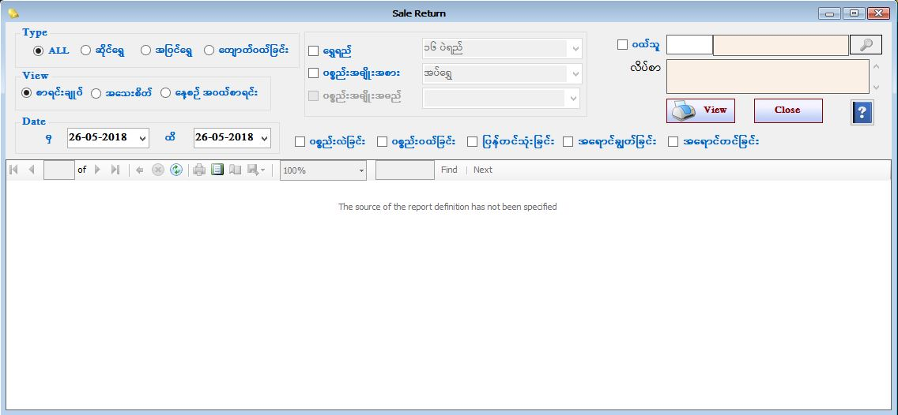

Purchase Stock Item Report Setup
Purchase Stock Report
Purchase Stock Gems Report(PurchaseStockGems)

- Reports အောက်ရှိ Purchase Stock Report Form ကိုဖွင့်ပါ။
- Purchase Stock Report Form သည် ပစ္စည်းအဝယ်စာရင်းများကို Voucher အလိုက်ကြည့်ရှုနိုင်သော Form ဖြစ်သည်။
- မိမိဆိုင်မှဝယ်ယူထားသော Barcode ပစ္စည်း နှင့် Barcode မပါရှိသော ပစ္စည်း နှစ်မျိုးလုံးအား ကြည့်ရှုလိုပါက All ကိုရွေးချယ်ပြီးကြည့်ရှုရမည်။
- ဆိုင်ရွှေ ကို on ထားပါက Barcode ရှိသော(မိမိဆိုင်ပစ္စည်း) ပစ္စည်းအဝယ်စာရင်းများကို ကြည့်ရှုခြင်းဖြစ်သည်။
- အပြင်ရွှေ ကို on ထားပါက Barcode မပါရှိသော(မိမိဆိုင်ပစ္စည်းမဟုတ်သော) ပစ္စည်းအဝယ်စာရင်းများကို ကြည့်ရှုခြင်းဖြစ်သည်။
- စာရင်းချုပ်အလိုက်ကြည့်လိုလျှင် Summary ကို ရွေးချယ်ပြီးကြည့်ရှုရမည်။
- အသေးစိတ် ကြည့်လိုပါက Detail ကို ရွေးချယ်ပြီးကြည့်ရှုရမည်။
- တစ်နေ့တာအဝယ်စာရင်း ကြည့်ရှုချင်ပါက နေ့စဉ်အဝယ်စာရင်းကိုရွေးပေးရပါမည်။ နေ့စဉ်အဝယ် စာရင်းကြည့်ရှုရာတွင် တစ်နေ့တာ ပစ္စည်းအလဲစာရင်းနှင့် အဝယ်စာရင်းကို သီးသန့် ကြည့်နိုင်ပါသည်။ နေ့စဉ်အဝယ်စာရင်းကိုရွေးပါ။ ထို့နောက် ပစ္စည်းလဲခြင်း checkbox ကိုon ပြီး ကြည့်ရှုနိုင် ပါသည်။ (သို့) ပစ္စည်းဝယ်ခြင်း checkbox ကိုon ပြီး ကြည့်ရှုနိုင် ပါသည်။
- ပစ္စည်းလဲခြင်းနှင့် ပစ္စည်းအဝယ်စာရင်းကို တစ်ရက်စာ မဟုတ်ဘဲ မိမိကြည့်လိုသော Date အတွင်းတွင်လည်း ကြည့်ရှုနိုင်ပါသည်။
- မိမိကြည့်လိုသော From Date နှင့် To Date ကိုရွေးချယ်ပေးရပါမည်။ From Date နှင့် To Date အတွင်း ရှိပစ္စည်းစာရင်းများကို တွေ့ရမည်ဖြစ်သည်။
- Gold Quality အလိုက်ကြည့်လိုပါက Gold Quality ၏ check box ကို on ပြီးမိမိကြည့်လိုသော Gold Quality ကိုရွေးချယ်ပြီးကြည့်ရှုနိုင်သည်။ (သို့) Item Category အလိုက်ကြည့်လိုပါက Item Category ၏ check box ကို on ထားပေးပါ။ (သို့) နှစ်မျိုးလုံး ကြည့်လိုပါက Gold Qualityနှင့် Item Categoryနှစ်မျိုးလုံးကို on ထားပြီး Data များကိုပြန်လည်ကြည့်ရှုနိုင် ပါသည်။
- Purchase Stock Report Form အား အသုံးပြုပြီးပါက Close Button ကိုနှိပ်၍ ပိတ်နိုင်ပါသည်။